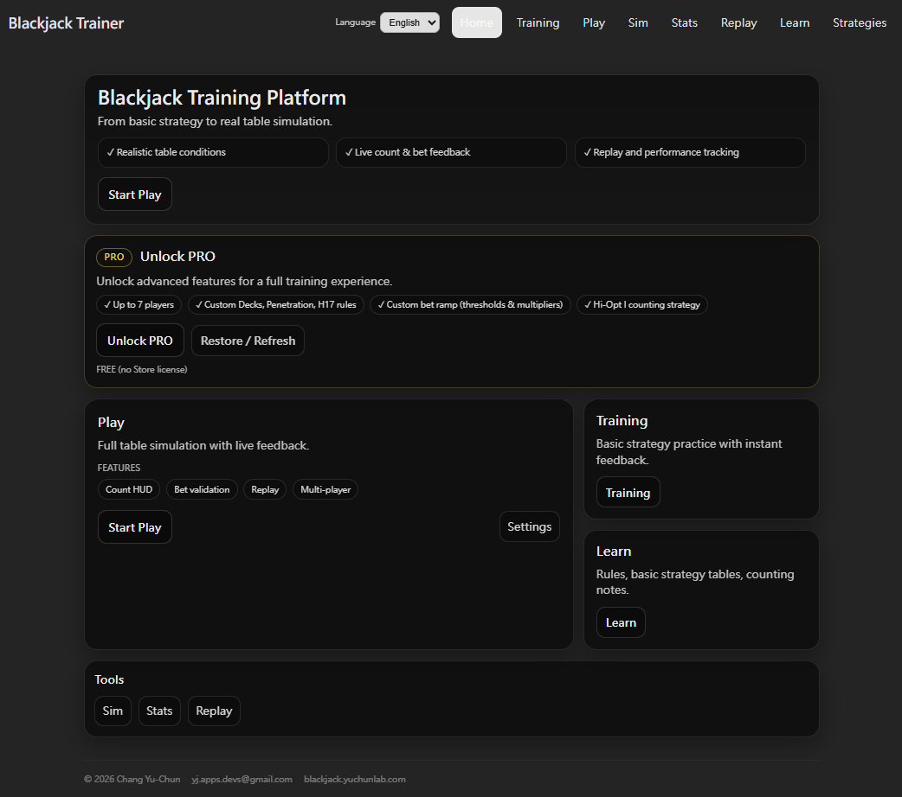

概要
Blackjack Card Counting Trainer PC 版は Windows で動作するデスクトップトレーニングツールで、Microsoft Store から入手できます。Python をシミュレーションエンジンとして使用し、Play・Training・Sim & Stats・Replay・Strategies を提供。Hi-Lo・KO・Red 7・FELT・Zen・Hi-Opt I・Omega II の 7 種のカウントシステムに対応しています。

機能一覧
プレイ（Play）
実戦に近いブラックジャックテーブル。最大 7 席まで設定可能。Running Count と True Count をリアルタイム表示し、ベット推奨と判断フィードバックのオン・オフが可能。
トレーニング（Training）
4 種の練習モード：Decision Training・Running Count Drill・True Count Drill・Count Drill。7 種のシステムすべてで切り替え可能。
シミュ・統計（Sim & Stats）
Python バックエンドによる Monte Carlo シミュレーション。手数・テーブルルール・カウントシステム・Bet Ramp を設定し、長期パフォーマンスデータを生成。
リプレイ（Replay）
Game セッションの記録を振り返り。ベット・アクション・Insurance のミスを絞り込み、Timeline で各ハンドの判断詳細を確認できます。
戦略カスタム（Strategies）
8 種のシステム（Basic・Hi-Lo・Hi-Opt I・KO・Red 7・FELT・Zen・Omega II）に対して独自の Deviation ルールセットを作成。Index しきい値を変更して Game と Training に適用。
学習（Learn）
ルール説明・基本戦略チャート・カウントノートを学習リファレンスとして提供。
カウントシステム
トレーニングモードは 7 種のカウントシステムをサポートし、各システムに専用の Count Drill エントリと Strategy Profile があります：
- Hi-Lo（FREE）
- KO
- Red 7
- FELT
- Zen
- Hi-Opt I
- Omega II
FREE 版と PRO 版
FREE 版には Hi-Lo カウントと基本機能が含まれます。Microsoft Store でのアプリ内購入により PRO 版にアップグレードすると、以下が解放されます：
- 最大 7 プレイヤー席（FREE は 3 席まで）
- デッキ数・ペネトレーション・H17 ルールのカスタム設定
- Bet Ramp のしきい値と倍率のカスタム設定
- Hi-Opt I の Strategy Profile カスタマイズ
プラットフォーム
Windows 10 / 11。Microsoft Store 経由でインストール。インターフェースは繁体字中国語・English・日本語に対応。